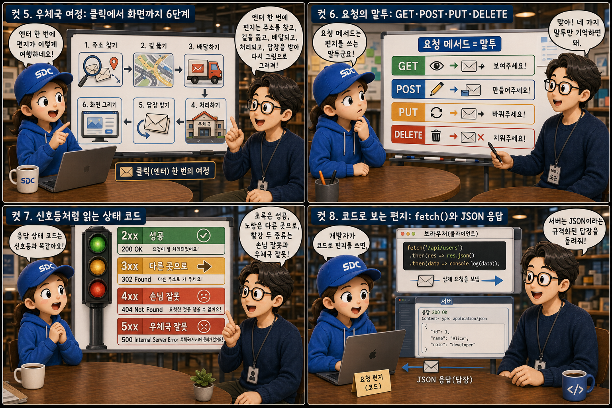

주소창에 엔터를 치는 그 짧은 순간, 눈에 보이지 않는 편지 한 통이 우체국을 향해 날아갑니다. 브라우저가 작성해 부치는 이 편지가 HTTP 요청(Request)이고, 서버라는 사무실이 그 편지를 읽고 돌려보내는 답장이 HTTP 응답(Response)입니다. 이 글은 그 편지가 어떻게 쓰이고, 어떤 길을 지나 배달되고, 어떻게 답장을 받아 화면이라는 그림으로 완성되는지를 처음부터 끝까지 따라가는 한 편의 그림책입니다.
PART 1 / 3 — 편지의 발견: HTTP라는 약속 (컷 01–04)
fourcut-01 — 컷 01 ~ 04
컷 01
편지 한 통이 시작되는 순간
브라우저 주소창에 엔터를 치는 그 짧은 순간, 눈에 보이지 않는 편지 한 통이 우체국을 향해 날아간다.
주소창에 https://example.com을 입력하고 엔터를 누르면, 그 자리에서 청록색 편지 한 통이 튕겨 나오듯 솟아올라 저 멀리 우체국 — 서버 — 을 향해 날아갑니다. 이 편지가 바로 HTTP 요청(Request)입니다. 편지가 지나간 궤적 뒤에는 보라색 잔상이 남는데, 이는 곧 돌아올 답장, 즉 HTTP 응답을 암시합니다. 이 그림책은 그 편지가 어떻게 쓰이고 어떻게 답장을 받는지를 처음부터 끝까지 따라갑니다. GET / HTTP 1.1
컷 02
정의부터 명확히: HTTP란 무엇인가
HTTP는 클라이언트와 서버가 “이런 형식으로 편지를 주고받자”라고 미리 약속한 통신 규칙이다.
HTTP(HyperText Transfer Protocol)는 클라이언트와 서버가 정보를 주고받을 때 지키기로 약속한 통신 규칙입니다. 마주 보고 선 두 건물 — 작은 집 모양의 클라이언트(브라우저)와 큰 건물 모양의 서버 — 이 계약서 양쪽 끝을 나눠 붙잡고 있는 장면을 떠올려 보세요. 이 규칙 덕분에 크롬이든 사파리든, 파이썬 서버든 자바 서버든 상관없이 동일한 형식으로 편지를 쓰고 읽을 수 있습니다. 즉 HTTP는 특정 프로그램이 아니라 ‘이렇게 편지를 쓰자’는 약속 그 자체입니다.
컷 03
편지 두 장: 요청과 응답의 구조
요청은 발신 편지, 응답은 답장 편지다. 두 편지 모두 정해진 칸에 정해진 내용을 채워 넣는다.
HTTP 요청은 어떤 방법으로(Method), 어디에(URL), 어떤 부가 정보와 함께(Headers), 무엇을 담아(Body) 보낼지를 적은 편지입니다. HTTP 응답은 그 요청이 성공했는지 실패했는지를 알리는 상태 코드(Status Code)와 함께, 역시 Headers와 Body를 담아 돌려주는 답장입니다. 청록색 편지지에는 “GET /users/1”이라는 도장이, 보라색 편지지에는 큼직한 “200 OK” 도장이 찍혀 있을 뿐 — 두 편지는 형식만 다를 뿐 같은 뼈대(상태 줄, 헤더, 본문)를 공유합니다. Request = Method + URL + Headers + Body / Response = Status + Headers + Body
컷 04
핵심 정의: 상태를 기억하지 않는 프로토콜
HTTP는 이전 편지를 기억하지 못하는, 상태를 저장하지 않는(stateless) 프로토콜이다.
REQUEST
매번 완전히 독립된 새로운 편지
SERVER
응답을 보낸 뒤에는 아무것도 기억하지 않는다
stateless
HTTP는 상태를 저장하지 않는(stateless) 프로토콜입니다. 서버는 하나의 요청을 처리하고 응답을 보낸 뒤, 그 요청에 대한 어떤 정보도 스스로 기억하지 않습니다. 매번 같은 표정으로 편지를 받아 드는 우체부처럼, 서버에게 도착하는 편지는 이전 편지와 무관한, 완전히 독립된 새로운 편지로 취급됩니다.
PART 2 / 3 — 편지의 여정과 말투 (컷 05–08)

fourcut-02 — 컷 05 ~ 08
컷 05
우체국 여정: 클릭에서 화면까지 6단계
엔터 한 번에 편지는 주소를 찾고, 길을 뚫고, 배달되고, 처리되고, 답장을 받아 다시 그림으로 그려지는 6단계 여정을 거친다.
① DNS 조회→② TCP 연결→③ HTTP 요청 전송→④ 서버 처리→⑤ HTTP 응답 전송→⑥ 브라우저 렌더링
엔터를 치는 순간부터 화면이 뜨기까지는 여섯 단계를 거칩니다. 먼저 DNS로 도메인의 실제 주소(IP)를 찾고, TCP로 서버와 통로를 연결한 뒤, HTTP 요청을 전송합니다. 서버는 이를 처리해 HTTP 응답을 돌려보내고, 브라우저는 그 응답을 읽어 화면을 그려냅니다. 주소록을 뒤지고, 길을 뚫고, 편지를 부치고, 사무실에서 서류를 처리하고, 답장을 부치고, 마지막으로 그 답장을 그림으로 조립하는 이 여섯 정거장이 보통 수십에서 수백 밀리초 사이에 모두 끝납니다.
컷 06
요청의 말투: GET·POST·PUT·DELETE
요청 메서드는 편지를 쓰는 말투다. “보여주세요”, “만들어주세요”, “바꿔주세요”, “지워주세요”라는 네 가지 말투가 있다.
HTTP 메서드는 서버에게 어떤 동작을 해달라고 요청하는지를 나타내는 동사입니다. 도구상자 안에 나란히 놓인 네 개의 편지 도장을 떠올려 보세요. GET은 데이터를 조회하고(“보여주세요”), POST는 새 데이터를 생성하며(“만들어주세요”), PUT은 데이터 전체를 교체하고(“통째로 바꿔주세요”), DELETE는 데이터를 삭제합니다(“지워주세요”). 여기에 일부 필드만 수정하는 다섯 번째 보조 도장 PATCH(“일부만 바꿔주세요”)까지 더하면, 이 다섯 가지 말투로 대부분의 웹 API 동작을 표현할 수 있습니다.
컷 07
신호등처럼 읽는 상태 코드
응답 상태 코드는 신호등과 같다. 초록은 성공, 노랑은 다른 곳으로, 빨강 두 종류는 손님 잘못과 우체국 잘못으로 나뉜다.
🚦 초록 · 노랑 — 가던 길을 안내
2xx: 성공 — 예: 200 OK
3xx: 다른 곳으로 안내 — 예: 301 Moved
🚦 빨강 두 개 — 누구의 잘못인가
4xx: 손님(클라이언트) 실수 — 예: 404 Not Found
5xx: 우체국(서버) 실수 — 예: 500 Internal Server Error
상태 코드는 응답 편지의 첫 줄에 적힌 결과 요약입니다. 2xx는 요청이 성공했다는 뜻이고, 3xx는 다른 위치로 다시 요청하라는 안내이며, 4xx는 클라이언트가 잘못된 요청을 보냈다는 뜻이고, 5xx는 서버 내부에서 문제가 생겼다는 뜻입니다. 자주 헷갈리는 400번대와 500번대의 차이는 잘못의 주체입니다. 400번대는 요청을 보낸 쪽의 실수, 500번대는 편지를 받은 서버 쪽의 실수입니다. 4xx = 요청이 잘못됨, 5xx = 서버가 처리 중 고장남
컷 08
코드로 보는 편지: fetch()와 JSON 응답
개발자가 코드로 편지를 쓰면 브라우저가 실제 요청을 보내고, 서버는 JSON이라는 규격화된 답장을 돌려준다.
요청 코드 (JavaScript) — 편지를 대신 써 주는 도구
// GET 메서드로 요청 편지를 부친다const res = await fetch('/api/users/1');
const user = await res.json();
응답 데이터 (JSON) — 규격화된 답장
{
"id": 1,
"name": "지민"
}
fetch('/api/users/1') 같은 코드 한 줄은 실제로는 GET 메서드로 해당 URL에 HTTP 요청을 보내라는 지시입니다. 서버는 이 요청을 처리한 뒤 보통 JSON 형식으로 응답 본문을 채워 돌려줍니다. JSON은 사람도 읽기 쉽고 여러 프로그래밍 언어에서 공통으로 다룰 수 있는 규격화된 데이터 형식이라, 마치 각 필드가 개별 서랍에 담긴 서류함처럼 요청과 응답 사이의 언어 차이를 없애 줍니다.
PART 3 / 3 — 실전 감각과 요약 (컷 09–12)
fourcut-03 — 컷 09 ~ 12
컷 09
기억 못 하는 편지: 로그인은 어떻게 유지되는가
HTTP는 매번 기억을 잃기 때문에, 로그인 상태를 유지하려면 편지에 신분증(쿠키, 세션, 토큰)을 함께 넣어 보내야 한다.
⚠ 헤더를 빠뜨리면? 매번 초면 취급 당하는 손님이 된다
HTTP는 상태를 저장하지 않기 때문에, 서버는 같은 사용자가 보낸 요청이라도 매번 처음 보는 손님처럼 대합니다. 창구를 두 번 세 번 방문해도 직원은 똑같이 “누구세요?”라고 묻습니다. 흔한 실수는 인증 정보를 헤더에 제대로 담지 못해 매 요청마다 로그인이 풀린 것처럼 동작하는 경우입니다.
✓ 요청마다 신분증을 함께 보낸다 — Cookie: session_id=abc123
로그인 상태를 유지하려면 요청마다 쿠키(Cookie), 세션(Session), 또는 토큰(Token)을 헤더에 담아 함께 보내야 합니다. 신분증 카드를 목에 걸고 방문한 손님에게 직원이 “아, 지민님!” 하고 반기듯, 서버는 이 인증 정보를 보고 비로소 사용자를 알아봅니다.
기억하지 못하는 것은 프로토콜의 결함이 아니라 설계입니다. 대신 기억이 필요한 순간에는, 편지 봉투에 신분증을 끼워 보내는 방식으로 상태를 이어 갑니다.
컷 10
편지 봉투의 표시: 주요 헤더 비교표
헤더는 편지 봉투 겉면에 적는 표시다. 봉투 안 내용물이 무엇인지, 누가 보냈는지, 얼마나 오래 보관할지를 알려준다.
헤더는 본문(Body)이 아니라 본문을 설명하는 부가 정보
헤더
봉투 위의 비유
실제 역할
Content-Type
내용물의 종류표 (소포 상자 스티커)
본문이 JSON인지 HTML인지 이미지인지 알림
Authorization
발신자 신원 증명 (신분증 스티커)
요청을 보낸 사람의 신원을 증명
Cache-Control
얼마나 보관할지 지시 (모래시계 스티커)
응답을 얼마나 오래 저장해도 되는지 지시
Content-Length
내용물 무게 표시 (저울 스티커)
본문의 크기를 바이트 단위로 표시
헤더는 요청과 응답 모두에 붙는 부가 정보로, 본문의 내용을 설명하거나 처리 방식을 지시합니다. Content-Type은 본문이 JSON인지 HTML인지 이미지인지를 알려주고, Authorization은 요청을 보낸 사람의 신원을 증명하며, Cache-Control은 이 응답을 얼마나 오래 저장해도 되는지를 지시합니다. 헤더를 정확히 이해하면 요청과 응답을 훨씬 세밀하게 제어할 수 있습니다.
컷 11
언제 어떤 편지를 쓸까: GET vs POST와 멱등성
같은 편지를 열 번 보내도 결과가 똑같아야 하는 안전한 편지(GET)와, 보낼 때마다 새로운 일이 벌어지는 편지(POST)는 구분해서 써야 한다.
📮 GET 편지함 — 조회할 때, 검색할 때
같은 편지를 열 번 넣어도 서가엔 책 한 권 그대로
멱등(idempotent): 몇 번을 보내도 결과는 같다
조회 전용, 반복해도 안전
📮 POST 편지함 — 새 글을 쓸 때, 결제를 요청할 때
같은 편지를 열 번 넣으면 상자가 열 개 쌓인다
비멱등: 보낼 때마다 새로운 일이 생긴다
상태 변경, 반복하면 위험 (예: 중복 주문)
GET은 서버의 데이터를 조회만 하고 변경하지 않으므로, 같은 요청을 여러 번 반복해도 결과가 동일한 멱등성(idempotency)을 가집니다. 반면 POST는 새로운 데이터를 생성하는 등 서버 상태를 변경하므로, 같은 요청을 반복하면 매번 새로운 결과 — 예를 들어 중복 주문 — 가 발생할 수 있습니다. 그래서 단순 조회에는 GET을, 생성이나 결제처럼 상태를 바꾸는 동작에는 POST를 사용하는 것이 설계 원칙입니다.
컷 12
개발자도구로 훔쳐보는 편지함, 그리고 정리
개발자 도구의 Network 탭을 열면, 지금까지 배운 요청과 응답의 모든 편지 왕래를 실시간으로 훔쳐볼 수 있다.
개발자 도구의 Network 탭을 열면 브라우저가 실제로 주고받은 모든 요청과 응답을 눈으로 확인할 수 있습니다. 어떤 메서드로, 어떤 상태 코드로, 어떤 헤더와 본문을 담아 편지가 오갔는지가 전부 기록되어 있습니다. 결국 웹은 이 여섯 가지 원리 — 요청과 응답의 구조, 무상태성, 메서드, 상태 코드, 헤더, 그리고 로그인 유지 방법 — 위에서 돌아갑니다.
요청 = Method+URL+Headers+Body응답 = Status+Headers+BodyHTTP는 무상태(stateless)메서드 = GET/POST/PUT/DELETE상태 코드 = 2xx/3xx/4xx/5xx로그인 유지 = 쿠키/세션/토큰
한 통의 편지, 한 통의 답장
주소창의 엔터 한 번은 청록색 요청 편지 한 통이 되어 우체국으로 떠나고, 서버는 상태 코드와 헤더, 본문을 담은 보라색 답장으로 응답합니다. 주소를 찾고, 길을 뚫고, 편지가 오가는 이 왕복 여정 위에서 — 우리가 보는 모든 웹 화면이 완성됩니다.